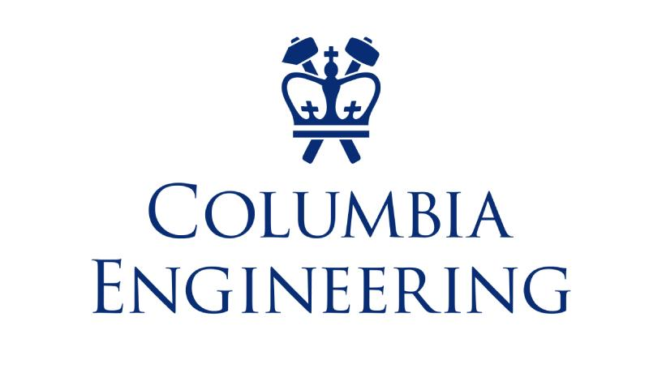

hi there! i'm elizabeth
-
✹︎ Software Engineer (TDP) at @
M&T Bank
✹︎ B.S. Computer Science @ Columbia University
✹︎ Former Content Strategy Intern @ WebMD
experience —
WebMD
June 2022 - August 2022
As a Content Strategy intern at WebMD, I developed a UX proposal for their DocFinder tool, pitched 100s of new articles, and performed audits of existing articles.
Content Strategy

Columbia University
September 2020 - May 2023
In May 2023, I earned my B.S. Computer Science from Columbia University. Outside of my CS coursework, I also wrote for a student newspaper and took some great English classes.
IDK Go Lions